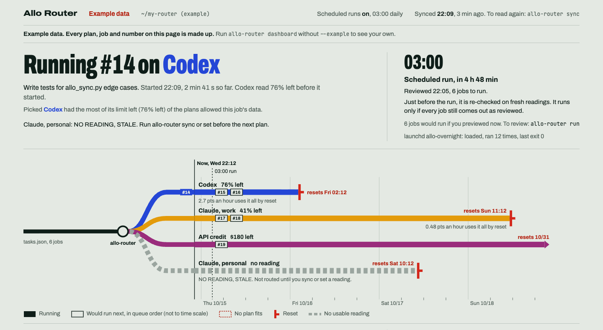

Allocate usage across your plans based on how much of each limit remains.
You get more done, and no plan runs out while another resets with plenty left on the table. Allo Router reads what is left on each plan from files already on your computer, sends each job to the plan with the most of its limit left that may take it, and runs only the plan you reviewed.
allo-router sync then allo-router run
Python 3.9 or newer, no dependencies.
Example plans and readings, routed by the real planner. Yours come from allo-router sync or set.
Reads, never logs in. Usage comes from files Claude Code and Codex already keep on your computer.
Runs only what you reviewed. If a reading, job or command changed since the preview, it refuses and starts nothing.
Keeps your keys out. Stores no API keys. Free and MIT licensed.
You keep two files: your plans, with what is left and when each resets, and your jobs. The planner reads them and prints a proposal. It never sends anything.
allo-router sync reads the usage Claude Code and Codex already record on your computer. It opens no network connection, and where a file has no limit in it, it says so.Planning and running are separate steps, and the second one only accepts what you saw in the first.
allo-router runEvery job, plan and commandplan.jsonSaved and hashedrun --plan plan.json --executeAsks before each jobThe saved plan records the readings it was made on and a hash of your plans, jobs and commands. If the file was edited, is older than an hour, or any reading, job or command changed since, the run refuses before starting anything:
refusing to run plan plan.json: readings in pools.json changed since it was saved; preview again to plan on the new ones
Each job's output goes to runs/ and a line to runs.jsonl. allo-router report turns that log into what ran where, what failed, the share of each plan's limit it used, and an estimate of what it saved, labelled as an estimate.
Coming in the next release: for a run you schedule overnight, allo-router run --refresh plan.json re-checks the plan you reviewed in the evening against fresh readings just before it runs. It saves it again only if every job still comes out exactly as reviewed, so nothing new gets through.
Coming in the next release: allo-router dashboard serves a read-only page on your own computer. It shows which job is running and where, what each plan has left, what runs next and whether the overnight run will accept its plan.

Needs Python 3.9 or newer and nothing else. Install with pip install . from a checkout (not on PyPI yet), or run python3 allo.py directly.
mkdir my-router && cd my-router
allo-router init # writes pools.json and tasks.json
allo-router # prints the plan
allo-router sync # reads usage from local Claude Code / Codex files
allo-router set chatgpt pct=55 # or record a reading by hand
allo-router run # preview the exact commands; saves plan.json
allo-router run --plan plan.json --execute # runs exactly that plan
allo-router report --period week # what ran, what it used, what it saved (estimated)The starter files describe four example plans with made-up readings, and every plan starts on the dry-run backend, so a first --execute starts nothing real. To let a plan start jobs, check the command its dry run shows, then change its "backend" from "dry-run" to "shell" in pools.json. One plan at a time.
Allo Router does not check whether a provider's terms allow a given use of your plan. That is yours to read.